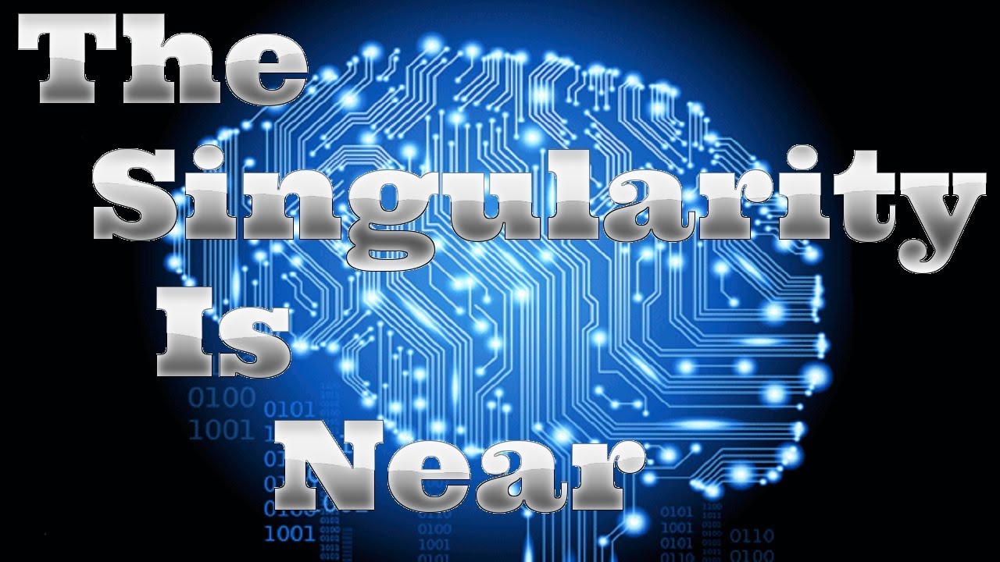

The singularity is quite a simple idea often used in many science fiction films. It is the idea that when AI get to a certain level of intelligence, their intelligence will begin to grow exponentially resulting in them being much smarter than humans. In other words, it is when AI become almost limitlessly intelligent, and get more intelligent every second by building themselves smarter than before as well as constantly learning.
